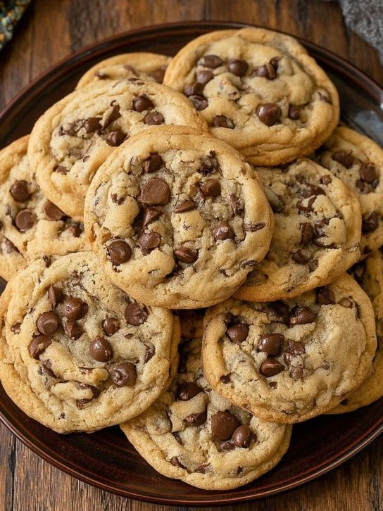

Difficulty - Easy
Total Time - 25 mins
INGREDIENTS :
- 1 cup butter, softened
- 1 cup white sugar
- 1 cup brown sugar
- 2 eggs
- 2 tsp vanilla extract
- 3 cups all-purpose flour
- 1 tsp baking soda
- 1/2 tsp baking powder
- 1/2 tsp salt
- 2 cups chocolate chips
INSTRUCTIONS :
- Preheat oven to 180°C (350°F). Line a baking tray with parchment paper.
- Cream butter, white sugar, and brown sugar until fluffy.
- Add eggs and vanilla extract, mix well.
- Sift flour, baking soda, baking powder, and salt. Combine with wet mixture.
- Fold in chocolate chips.
- Scoop spoonfuls onto tray and bake for 10–12 minutes until golden brown.
- Cool on wire rack and enjoy.